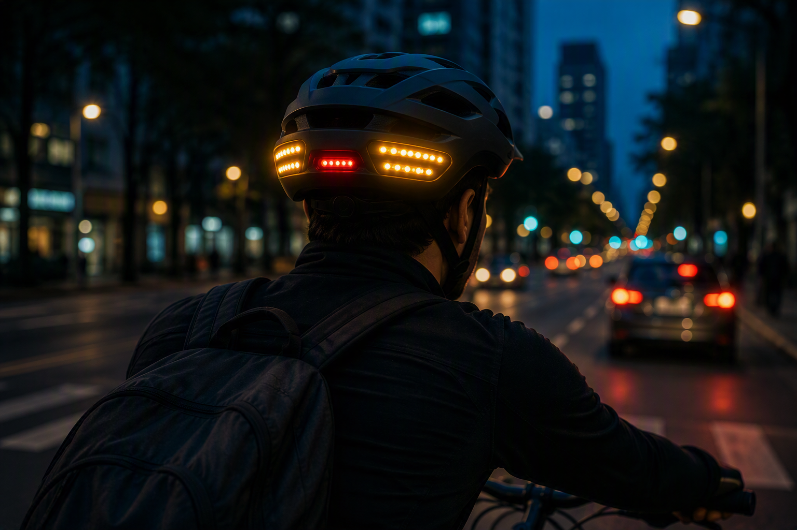

Mayor visibilidad
Las luces ayudan a comunicar la intención de giro.
MotionHelmet detecta movimientos de inclinación configurados y activa luces direccionales como apoyo visual para la comunicación del ciclista.

Una experiencia tecnológica, sencilla y orientada a la movilidad urbana responsable.
Las luces ayudan a comunicar la intención de giro.
Los sensores reconocen movimientos configurados.
Direccionales ámbar y luz central roja con una lógica visual familiar.
El casco propone una direccional ámbar para cada lado y una luz central roja para representar frenado o detención.
Moverse en bicicleta por la ciudad exige atención constante. MotionHelmet propone un casco inteligente que reconoce inclinaciones configuradas y activa luces direccionales. Su novedad está en una interacción intuitiva que evita depender de un control manual adicional. El sistema detecta, interpreta y señaliza. MotionHelmet no reemplaza las señales viales, la atención permanente ni los equipos de protección certificados. Su función es acompañar las prácticas de conducción responsable y explorar una comunicación visual más clara en recorridos urbanos.
La bicicleta forma parte de la movilidad cotidiana. Comunicar una intención de giro favorece la convivencia entre usuarios de la vía. MotionHelmet es una propuesta conceptual que busca complementar esa comunicación mediante luces direccionales activadas por inclinación.
Durante un recorrido, el ciclista debe controlar la bicicleta, observar el entorno y comunicar sus maniobras. El equipo supone que una señal luminosa adicional podría resultar útil de noche o en tránsito intenso. La frecuencia y relevancia de esta necesidad requieren entrevistas y pruebas con ciclistas urbanos, estudiantes y repartidores.
El sensor detectaría un movimiento configurado, el sistema interpretaría la dirección y activaría una luz lateral ámbar. Una luz roja central representaría frenado o detención. Se deben definir los ángulos, duración, cancelación y mecanismos contra activaciones accidentales.
La propuesta busca aportar una señal visual adicional, reducir la dependencia de controles manuales e integrar iluminación y detección en el casco. Estos beneficios todavía deben validarse mediante pruebas de visibilidad, precisión y usabilidad.
Deben evaluarse la batería, resistencia al agua, peso, mantenimiento y compatibilidad con certificaciones. El sistema no sustituye las normas, señales manuales exigibles, atención del ciclista ni protección certificada.
MotionHelmet combina sensores y luces para explorar una señalización complementaria. El siguiente paso es investigar con usuarios, construir un prototipo y realizar pruebas controladas antes de considerar cualquier implementación real.
Registra el movimiento configurado.
Reconoce la dirección asociada.
Activa la luz correspondiente.
Formulario demostrativo para la actividad académica.